Prototype "Agility man"
The core idea of the prototype is to build mechanics similar to “Fall Guys” where the player must navigate obstacle courses and reach the finish line.
In this case, I created reusable C++ components and attached them to Blueprints with Actors to deliver the required functionality: health, projectiles, object rotation, super jump, jump pads and patrolling. As a result, the system is highly flexible and quick to configure.
Screenshots
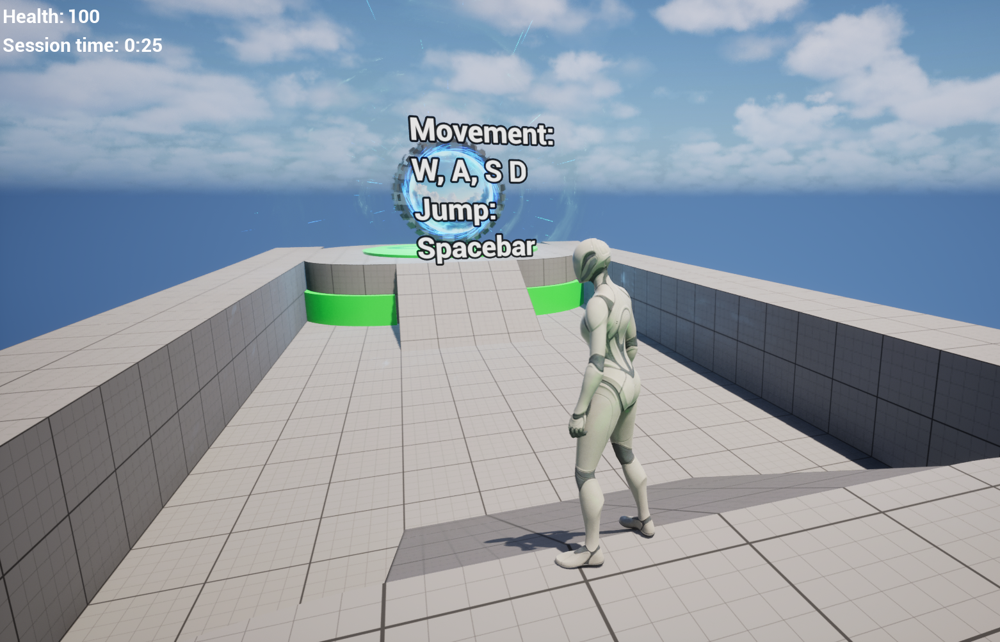
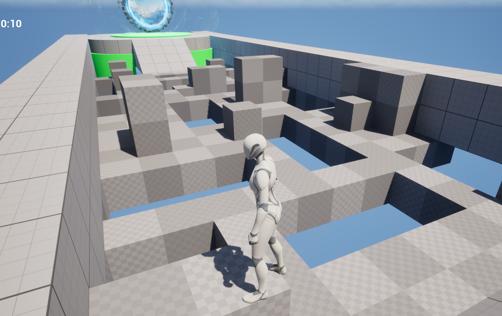
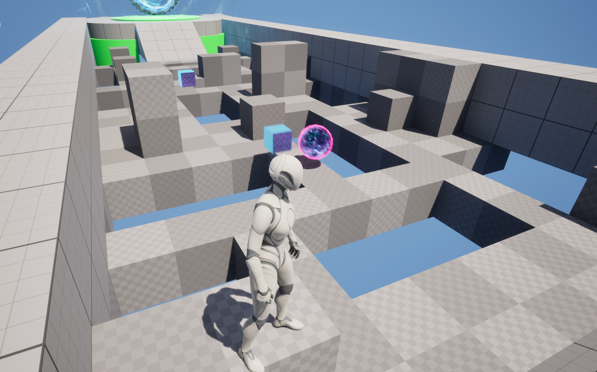
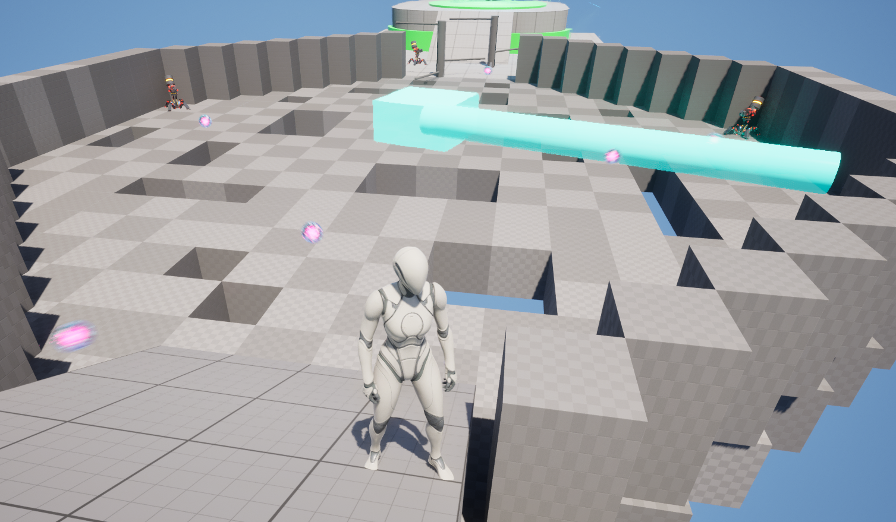
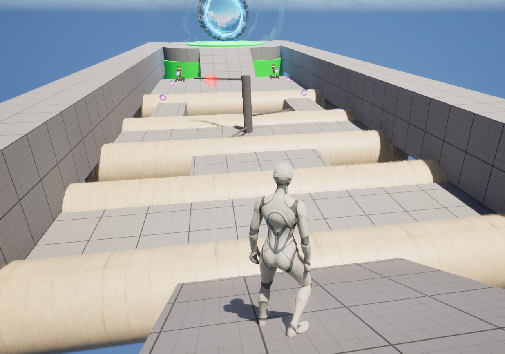
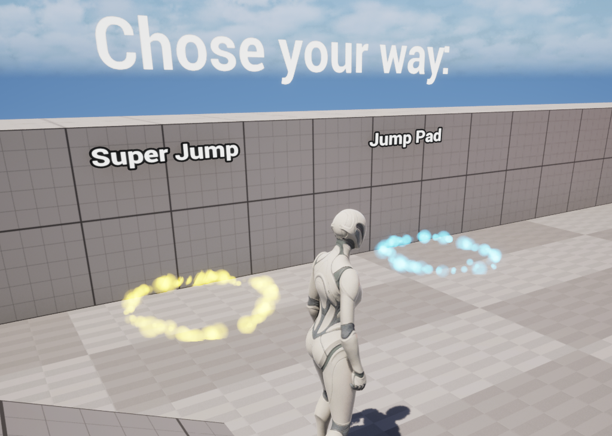
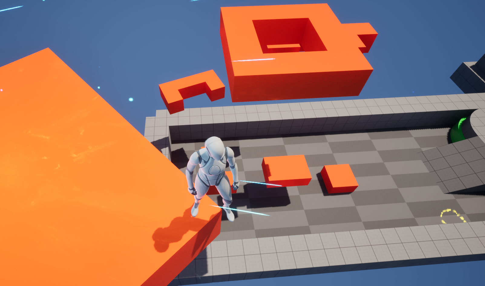
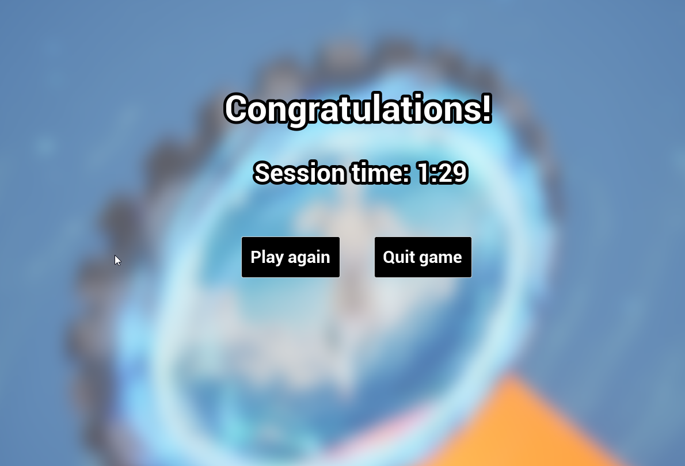
Gameplay
Design details
Health system has take damage function, that allow player to be killed by projectiles or falling.
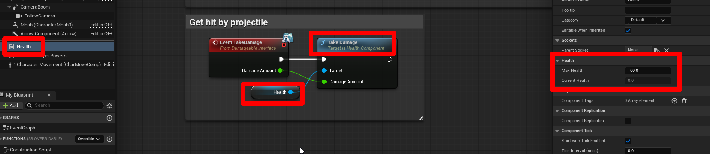Shooting system spawn projectile and can be adjusted as needed.
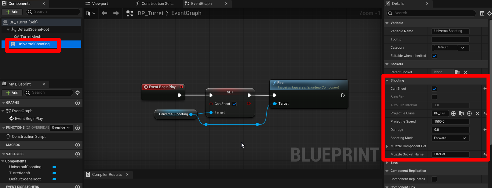Rotation system allows us to easily rotate any object in the scene.
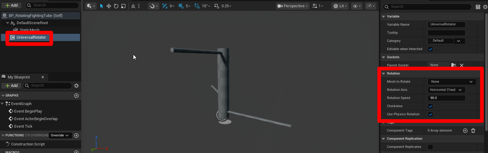Patrol system allows to make looped routes for objects, for example flying meshes.
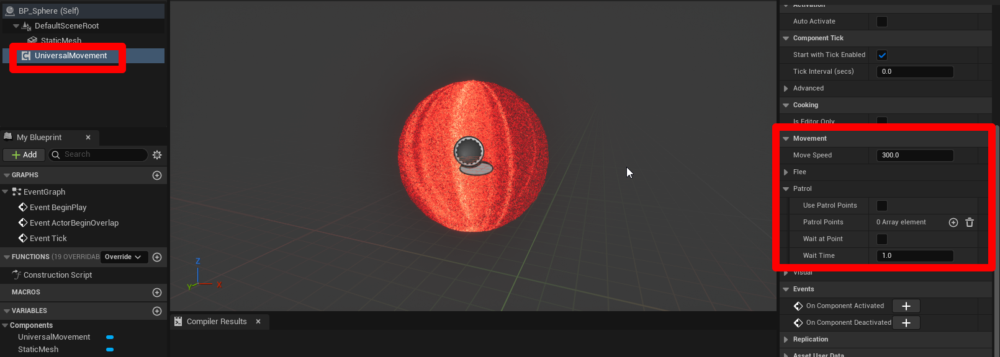